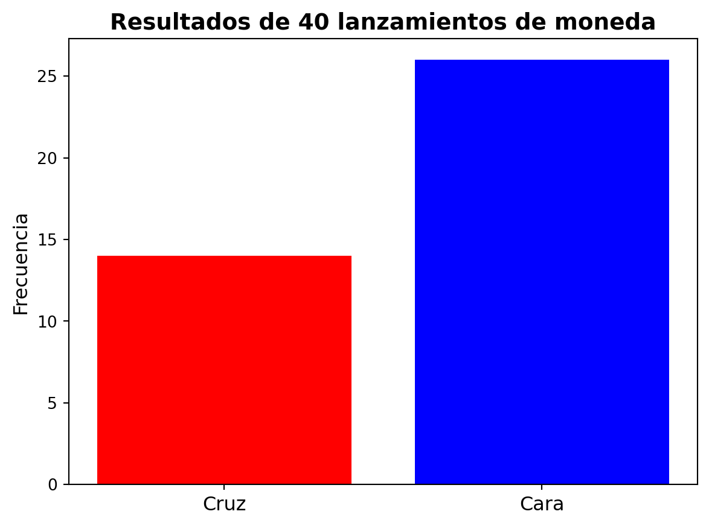
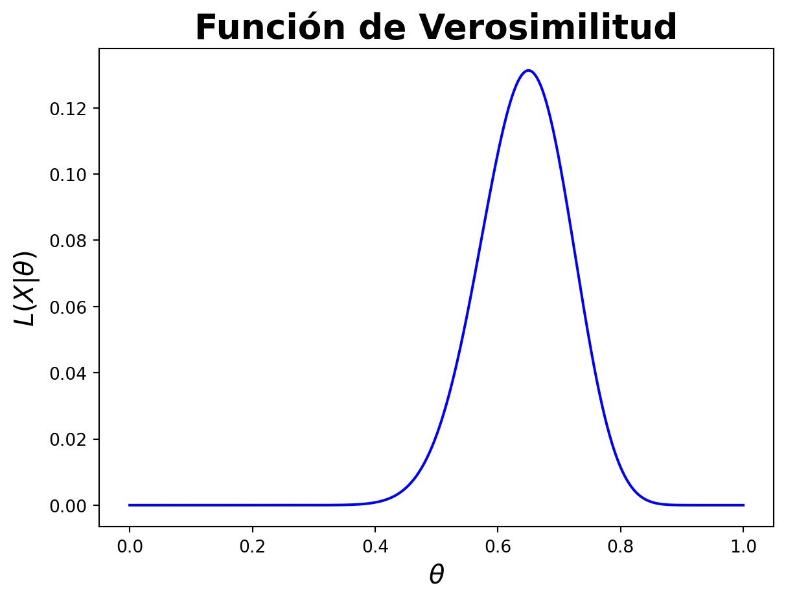
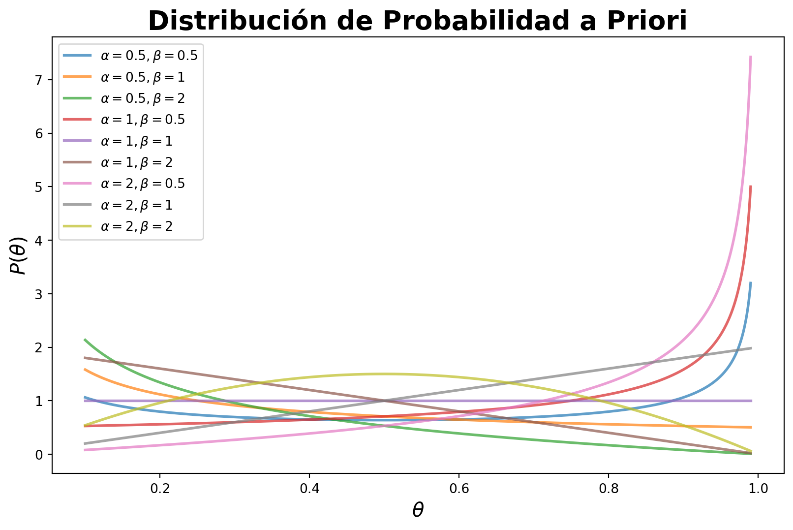
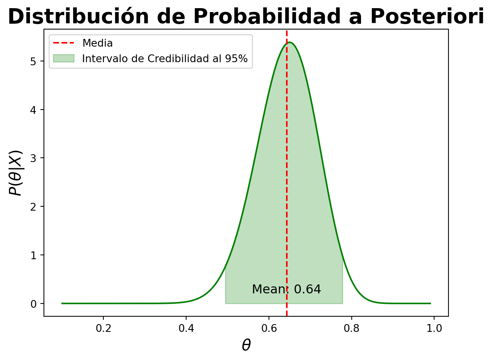
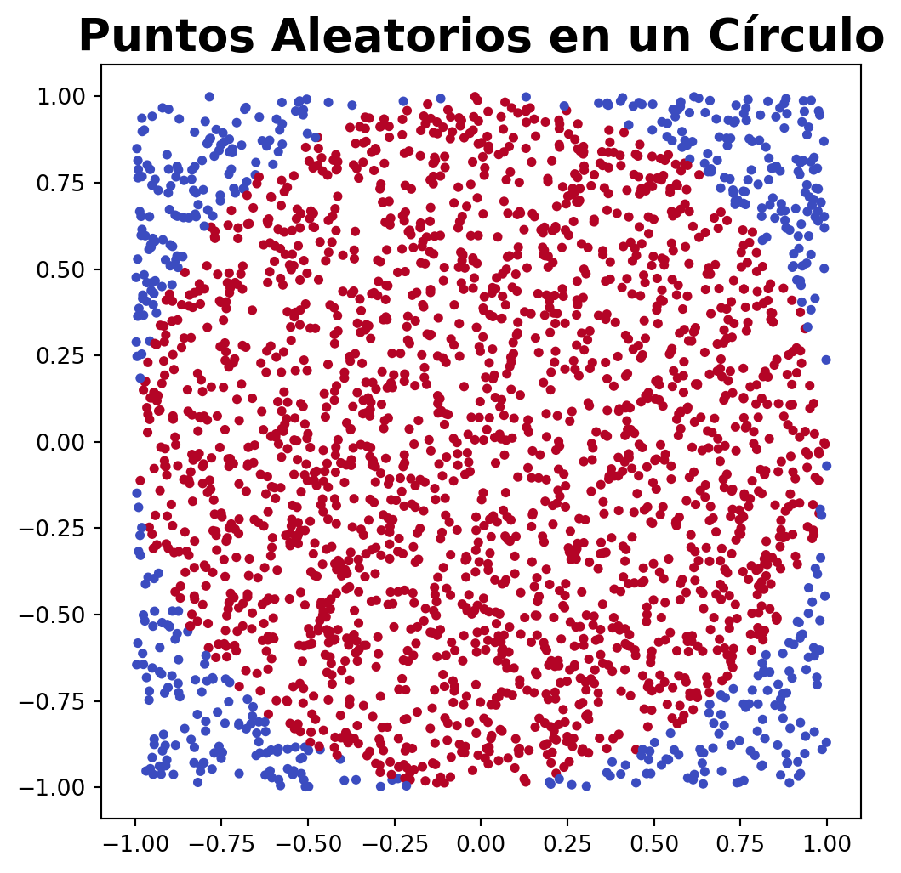
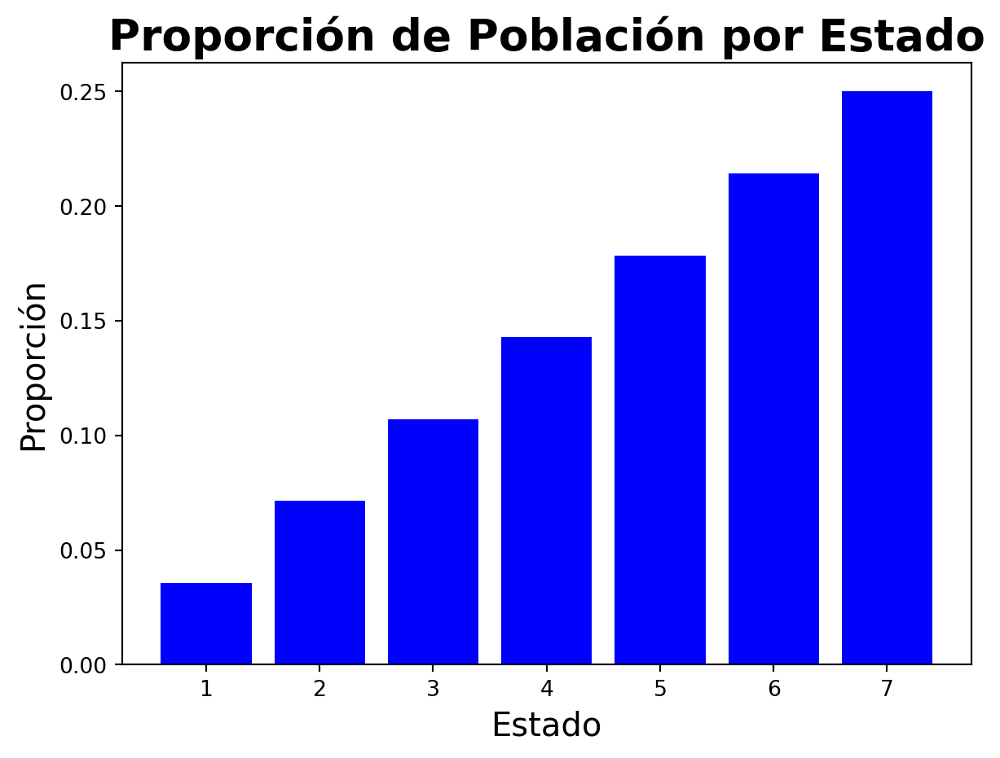
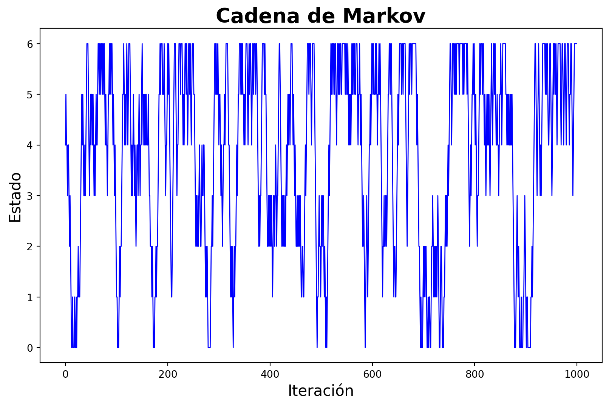
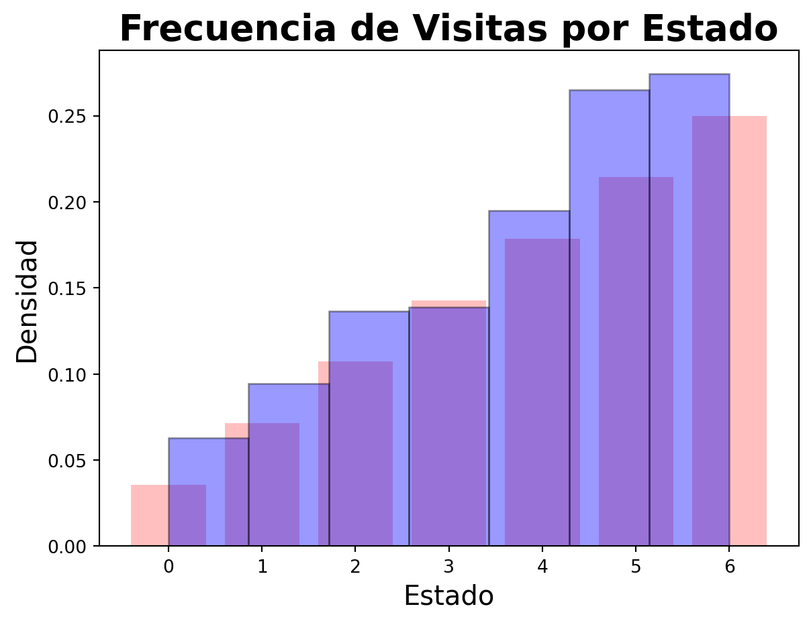
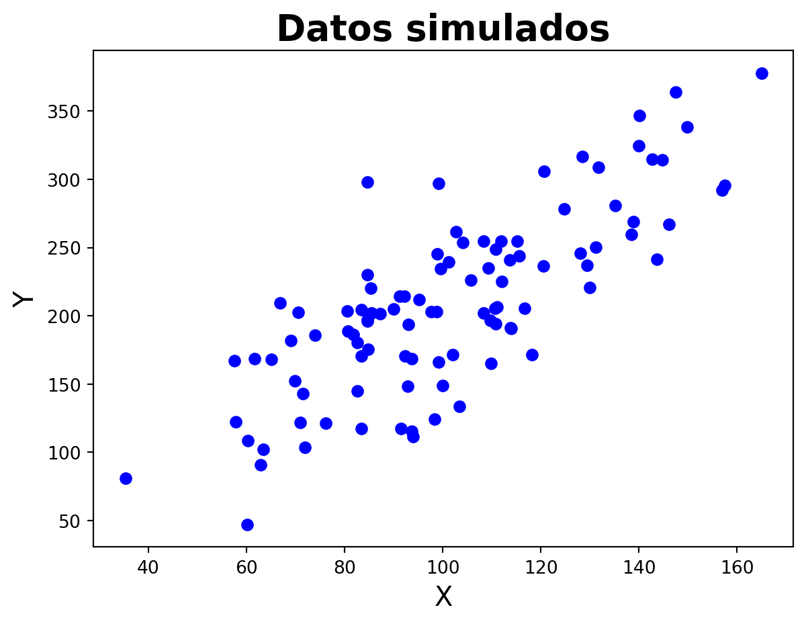

Existen dos enfoques principales en estadística: el enfoque frecuentista y el enfoque bayesiano. En este documento, se presentará una introducción a la estadística bayesiana.
La filosofía de la estadística bayesiana es diferente a la de la estadística frecuentista. En la estadística bayesiana, se considera que la incertidumbre en los parámetros de un modelo se puede representar mediante una distribución de probabilidad. Por otro lado, en la estadística frecuentista, los parámetros son considerados como valores fijos y la incertidumbre se representa mediante intervalos de confianza, que son estimaciones de la variabilidad de los parámetros dada la muestra.
En la estadística bayesiana, se considera que los parámetros de un modelo son variables aleatorias y se les asigna una distribución de probabilidad a priori. Esta distribución de probabilidad a priori representa el conocimiento previo que se tiene sobre los parámetros antes de observar los datos. Luego, se actualiza esta distribución de probabilidad a priori con los datos observados para obtener la distribución de probabilidad a posteriori, que representa el conocimiento actualizado sobre los parámetros después de observar los datos.
Para lograr esta actualización utilizamos el Teorema de Bayes, que establece la relación entre la distribución de probabilidad a priori y la distribución de probabilidad a posteriori. El Teorema de Bayes se define de la siguiente manera:
\(P(\theta|X)\) es la distribución de probabilidad a posteriori de los parámetros \(\theta\) dado los datos \(X\).
\(L(X|\theta)\) es la función de verosimilitud, que representa la verosimilitud de observar los datos \(X\) dado los parámetros \(\theta\).
\(P(\theta)\) es la distribución de probabilidad a priori de los parámetros \(\theta\).
La distribución de probabilidad a posteriori se obtiene multiplicando la función de verosimilitud por la distribución de probabilidad a priori y normalizando el resultado. La distribución de probabilidad a posteriori es la distribución de probabilidad de los parámetros \(\theta\) dado los datos \(X\) y se utiliza para realizar inferencias sobre los parámetros del modelo.
Estimación de un Parámetro
Supongamos que lanzamos una moneda varias veces para poder estimar si la moneda tiene truco o esta sesgada. Para poder estimar este parámetro, podemos utilizar la estadística bayesiana. Para ello deberemos seguir los siguientes pasos:
Paso 1: Definir el Modelo de los Datos
Lo primero es encontrar un modelo que describa los datos o en otros términos, encontrar una distribución de probabilidad que describa la probabilidad de obtener una cara o una cruz. En este caso, podemos utilizar una distribución de Bernoulli para modelar la probabilidad de obtener una cara o una cruz en un lanzamiento de moneda. La distribución de Bernoulli se define de la siguiente manera:
\[ L(X|\theta) = \theta^x(1-\theta)^{1-x} \]
Donde:
\(X\) es la variable aleatoria que representa el resultado del lanzamiento de la moneda (0 si es cruz y 1 si es cara).
\(\theta\) es el parámetro de la distribución de Bernoulli que representa la probabilidad de obtener una cara en un lanzamiento de moneda.
El problema es que solo sirve para un lanzamiento en particular y nuestros datos son el resultado de varios lanzamientos. Para poder modelar los datos de varios lanzamientos, podemos utilizar una distribución de Bernoulli generalizada, que se conoce como distribución de Binomial. La distribución de Binomial se define de la siguiente manera:
Donde \(n\) es el número de lanzamientos de la moneda y \(x\) es el número de caras obtenidas en los \(n\) lanzamientos. Esta distribución representa la probabilidad de obtener \(x\) caras en \(n\) lanzamientos de una moneda con probabilidad \(\theta\) de obtener una cara, pero aquí \(\theta\) es una variable desconocida que queremos estimar y por tanto no representa una distribución de probabilidad. Será nuestro modelo de los datos o lo que llamamos anteriormente como la función de verosimilitud.
Vamos a simular datos de un lanzamiento de moneda con \(\theta = 0.65\) y \(n = 40\).
Código
import numpy as npimport matplotlib.pyplot as pltnp.random.seed(101408)datos = np.random.choice([0, 1], size=40, p=[0.35, 0.65])plt.bar([0, 1], [sum(datos ==0), sum(datos ==1)], color=['red', 'blue'])plt.xticks([0, 1], ['Cruz', 'Cara'], fontsize=12)plt.ylabel('Frecuencia', fontsize=12)plt.title('Resultados de 40 lanzamientos de moneda', fontsize=14, fontweight='bold')plt.show()

Ahora vamos a ver como luce la función de verosimilitud para distintos valores de \(\theta\).
Código
from scipy.stats import binomtheta = np.linspace(0, 1, 1000)plt.plot(theta, binom.pmf(sum(datos ==1), 40, theta), color='blue')plt.xlabel(r'$\theta$', fontsize=15)plt.ylabel(r'$L(X|\theta)$', fontsize=15)plt.title('Función de Verosimilitud', fontsize=20, fontweight='bold')plt.show()

Paso 2: Definir la Distribución de Probabilidad a Priori
El siguiente paso es definir una distribución de probabilidad a priori para el parámetro \(\theta\). La distribución de probabilidad a priori representa el conocimiento previo que se tiene sobre el parámetro \(\theta\) antes de observar los datos.
Existen dos tipos de distribuciones de probabilidad a priori: distribuciones de probabilidad a priori informativas y distribuciones de probabilidad a priori no informativas. Las distribuciones de probabilidad a priori informativas se utilizan cuando se tiene información previa sobre el parámetro \(\theta\) y se desea incorporar esta información en el análisis. Por otro lado, las distribuciones de probabilidad a priori no informativas se utilizan cuando no se tiene información previa sobre el parámetro \(\theta\) y se desea dejar que los datos guíen la inferencia.
Debemos de pensar primeramente para que rangos nuestro parámetro \(\theta\) puede variar. En este caso, como \(\theta\) es una probabilidad, debe de estar en el rango \([0, 1]\). Una distribución de probabilidad a priori común para el parámetro \(\theta\) es la distribución Beta, que se define de la siguiente manera:
Veamos como se ve para distintos valores de \(\alpha\) y \(\beta\).
Código
from scipy.stats import betatheta = np.linspace(0.1, 0.99, 1000)alphas = [0.5, 1, 2]betas = [0.5, 1, 2]plt.figure(figsize=(10, 6))for a in alphas:for b in betas: plt.plot(theta, beta.pdf(theta, a, b), label=f'$\\alpha={a}, \\beta={b}$', alpha=0.7, lw=2)plt.xlabel(r'$\theta$', fontsize=15)plt.ylabel(r'$P(\theta)$', fontsize=15)plt.title('Distribución de Probabilidad a Priori', fontsize=20, fontweight='bold')plt.legend()plt.show()

Las formas de la distribución de probabilidad a priori dependen de los valores de los parámetros \(\alpha\) y \(\beta\). Por ejemplo, si \(\alpha = \beta = 1\), la distribución de probabilidad a priori es uniforme en el intervalo \([0, 1]\). Si \(\alpha = \beta = 0.5\), la distribución de probabilidad a priori es una distribución de probabilidad a priori no informativa. Si \(\alpha > \beta\), la distribución de probabilidad a priori se concentra en valores cercanos a 1. Si \(\alpha < \beta\), la distribución de probabilidad a priori se concentra en valores cercanos a 0.
Usemos valores de \(\alpha = 1\) y \(\beta = 1\) para nuestra distribución de probabilidad a priori.
Paso 3: Calcular la Distribución de Probabilidad a Posteriori
El siguiente paso es calcular la distribución de probabilidad a posteriori de los parámetros \(\theta\) dado los datos \(X\). Para ello, utilizamos el Teorema de Bayes.
Si recordamos la forma de la distribución Beta podemos ver que son muy similares y de hecho la distribución de probabilidad a posteriori es una distribución Beta con parámetros \(\alpha' = x+\alpha\) y \(\beta' = n-x+\beta\). Bravo!!!! Ya tenemos nuestra distribución de probabilidad a posteriori y sin realizar ninguna integral complicada.
Solamente escalamos la distribución a posteriori por fines de visualización. La distribución de probabilidad a posteriori es una combinación de la distribución de probabilidad a priori y la función de verosimilitud. La distribución de probabilidad a posteriori se concentra en valores de \(\theta\) que son consistentes con los datos observados y las creencias previas sobre el parámetro \(\theta\).
En este ejemplo hemos hecho uso de lo que se conocen como priors conjugados, que son aquellos que al multiplicar la función de verosimilitud por la distribución de probabilidad a priori, obtenemos una distribución de probabilidad a posteriori de la misma familia que la distribución de probabilidad a priori. En este caso, la distribución Beta es un prior conjugado para la distribución de Bernoulli o Binomial conocido como Modelo Beta-Binomial. Algunos priors conjugados son:
Distribución de Probabilidad
Prior Conjugado
Posterior Conjugado
Bernoulli
Beta
Beta
Binomial
Beta
Beta
Poisson
Gamma
Gamma
Normal
Normal
Normal
Paso 4: Resumir la Distribución de Probabilidad a Posteriori
Una vez que hemos calculado la distribución de probabilidad a posteriori de los parámetros \(\theta\) dado los datos \(X\), podemos realizar inferencias sobre los parámetros del modelo. Por ejemplo, podemos calcular la media, la mediana, la moda y los intervalos de credibilidad de la distribución de probabilidad a posteriori.
Código
from scipy.stats import betamedia_posterior = beta.mean(sum(datos ==1) + alpha_prior, 40-sum(datos ==1) + beta_prior)mediana_posterior = beta.median(sum(datos ==1) + alpha_prior, 40-sum(datos ==1) + beta_prior)moda_posterior = (sum(datos ==1) + alpha_prior -1) / (40+ alpha_prior + beta_prior -2)credibilidad_95 = beta.interval(0.95, sum(datos ==1) + alpha_prior, 40-sum(datos ==1) + beta_prior)print(f'Media de la distribución de probabilidad a posteriori: {media_posterior:.2f}')print(f'Mediana de la distribución de probabilidad a posteriori: {mediana_posterior:.2f}')print(f'Moda de la distribución de probabilidad a posteriori: {moda_posterior:.2f}')print(f'Intervalo de credibilidad al 95%: {credibilidad_95}')
Media de la distribución de probabilidad a posteriori: 0.64
Mediana de la distribución de probabilidad a posteriori: 0.65
Moda de la distribución de probabilidad a posteriori: 0.65
Intervalo de credibilidad al 95%: (0.49405252639426683, 0.7787721379389346)
Gráfiquemos la distribución de probabilidad a posteriori con la media y los intervalos de credibilidad.
Código
plt.plot(theta, posterior, color='green')plt.axvline(media_posterior, color='red', linestyle='--', label='Media')plt.fill_between(theta, 0, posterior, where=(theta >= credibilidad_95[0]) & (theta <= credibilidad_95[1]), color='green', alpha=0.25, label='Intervalo de Credibilidad al 95%')plt.annotate(f'Mean: {media_posterior:.2f}', (media_posterior, 0), textcoords='offset points', xytext=(0, 10), ha='center', fontsize=12, color='black')plt.xlabel(r'$\theta$', fontsize=15)plt.ylabel(r'$P(\theta|X)$', fontsize=15)plt.title('Distribución de Probabilidad a Posteriori', fontsize=20, fontweight='bold')plt.legend()plt.show()

Estos estadísticos son los que se reportan en la estadística bayesiana para resumir la distribución de probabilidad a posteriori y realizar inferencias sobre los parámetros del modelo. La media de la distribución de probabilidad a posteriori es un estimador puntual del parámetro \(\theta\) y representa el valor esperado de \(\theta\) dado los datos observados. La mediana de la distribución de probabilidad a posteriori es el valor que divide la distribución en dos partes iguales y representa el valor más probable de \(\theta\) dado los datos observados. La moda de la distribución de probabilidad a posteriori es el valor que tiene la mayor densidad de probabilidad y representa el valor más probable de \(\theta\) dado los datos observados. Los intervalos de credibilidad son intervalos que contienen un cierto porcentaje de la distribución de probabilidad a posteriori y representan la incertidumbre en la estimación de \(\theta\) dado los datos observados.
Algoritmos MCMC
En la práctica, calcular la distribución de probabilidad a posteriori de los parámetros \(\theta\) dado los datos \(X\) puede ser complicado, especialmente cuando el modelo es complejo y no se puede obtener una solución analítica. En estos casos, se utilizan algoritmos de muestreo de Markov Chain Monte Carlo (MCMC) para aproximar la distribución de probabilidad a posteriori.
Vamos a despedazar el nombre del algoritmo:
Markov Chain: Es un proceso estocástico en el que la probabilidad de pasar de un estado a otro depende solo del estado actual y no de los estados anteriores. En el contexto de MCMC, la cadena de Markov es una secuencia de muestras de los parámetros \(\theta\) que se generan de acuerdo con la distribución de probabilidad a posteriori.
Monte Carlo: Es un método de simulación que se utiliza para aproximar la distribución de probabilidad a posteriori mediante la generación de muestras aleatorias de los parámetros \(\theta\).
Cadenas de Markov
Una cadena de Markov es una secuencia de variables aleatorias \(X_1, X_2, ..., X_n\) que satisfacen la propiedad de Markov. La propiedad de Markov establece que la probabilidad de que la variable aleatoria \(X_{n+1}\) tome un valor dado depende solo del valor actual de la variable aleatoria \(X_n\) y no de los valores anteriores de la variable aleatoria \(X_1, X_2, ..., X_{n-1}\). En otras palabras, la probabilidad de transición de un estado a otro depende solo del estado actual y no de los estados anteriores.
Normalmente se representan las cadenas de Markov mediante una matriz de transición \(P\), que es una matriz cuadrada cuyas filas y columnas representan los estados de la cadena de Markov y cuyos elementos representan las probabilidades de transición de un estado a otro.
Veamos un ejemplo de una cadena de Markov con dos estados.
Código
import numpy as npnp.random.seed(101408)# Matriz de transiciónP = np.array([[0.6, 0.4], [0.3, 0.7]])# Estado inicialestado =0# Número de pasosn =10# Generar la cadena de Markovcadena = [estado]for i inrange(n): estado = np.random.choice([0, 1], p=P[estado]) cadena.append(estado)cadena
[0, 1, 1, 0, 0, 0, 0, 0, 1, 0, 1]
En este ejemplo, la cadena de Markov tiene dos estados (0 y 1) y la matriz de transición \(P\) es una matriz de \(2 \times 2\) cuyos elementos representan las probabilidades de transición de un estado a otro. El estado inicial de la cadena de Markov es 0 y se generan 10 pasos de la cadena de Markov. La cadena de Markov es una secuencia de estados que se generan de acuerdo con la matriz de transición \(P\).
Si multiplicamos \(n\) veces la matriz de transición \(P\) por el vector de estado inicial, obtendremos la distribución de probabilidad de los estados de la cadena de Markov después de \(n\) pasos.
Código
estado_inicial = np.array([1, 0])for i inrange(n): estado_inicial = np.dot(estado_inicial, P)estado_inicial
array([0.4285748, 0.5714252])
Aquí se imprime la probabilidad de estar en el estado 0 y en el estado 1 después de 10 pasos de la cadena de Markov. La probabilidad de estar en el estado 0 es 0.428 y la probabilidad de estar en el estado 1 es 0.572.
En el caso de los algorithmos MCMC, la matriz de transición \(P\) es una matriz de transición de la cadena de Markov que se utiliza para generar muestras de los parámetros \(\theta\) de acuerdo con el producto de la función de verosimilitud y la distribución de probabilidad a priori.
Monte Carlo
El método de Monte Carlo es un método de simulación que se utiliza para aproximar la distribución de probabilidad a posteriori mediante la generación de muestras aleatorias de los parámetros \(\theta\). El método de Monte Carlo se basa en el principio de que si se generan suficientes muestras aleatorias de los parámetros \(\theta\) de acuerdo con la distribución de probabilidad a posteriori, se puede aproximar la distribución de probabilidad a posteriori y realizar inferencias sobre los parámetros del modelo.
Un ejemplo clásico de Monte Carlo es calcular el área de un círculo mediante la generación de puntos aleatorios dentro de un cuadrado que contiene el círculo y contando el número de puntos que caen dentro del círculo. La proporción de puntos que caen dentro del círculo con respecto al total de puntos generados es una aproximación del área del círculo.
Código
import numpy as npimport matplotlib.pyplot as pltnp.random.seed(20011408)n =2500x = np.random.uniform(-1, 1, n)y = np.random.uniform(-1, 1, n)def dentro_circulo(x, y):return x**2+ y**2<=1plt.figure(figsize=(6, 6))plt.scatter(x, y, c=dentro_circulo(x, y), cmap='coolwarm', s=10)plt.title('Puntos Aleatorios en un Círculo', fontsize=20, fontweight='bold')plt.axis('equal')plt.show()area_circulo =sum(dentro_circulo(x, y)) / n *4area_circulo

3.1328
En este ejemplo, se generan 2500 puntos aleatorios dentro de un cuadrado que contiene un círculo de radio 1. Se cuentan el número de puntos que caen dentro del círculo y se calcula la proporción de puntos que caen dentro del círculo con respecto al total de puntos generados. La proporción de puntos que caen dentro del círculo es una aproximación del área del círculo y se multiplica por 4 para obtener el área del círculo.
Los métodos Monte Carlo siguen un patrón en la resolución de problemas:
Definir un conjunto posible de valores.
Generar valores aleatorios de acuerdo a una distribución de probabilidad.
Realizar un computo con los valores generados.
Repetir los pasos 2 y 3 un número suficiente de veces.
Algoritmo Hastings-Metropolis
El algoritmo de Metropolis-Hastings es un algoritmo de muestreo de Markov Chain Monte Carlo (MCMC) que se utiliza para aproximar la distribución de probabilidad a posteriori de los parámetros \(\theta\) dado los datos \(X\). El algoritmo de Metropolis-Hastings se basa en la generación de muestras de los parámetros \(\theta\) de acuerdo con la distribución de probabilidad a posteriori mediante la aceptación o rechazo de las muestras generadas.
Veamos como funciona este algoritmo con un ejemplo sencillo. Supongamos que somos politicos y queremos que la mayoria de personas voten por nosotros. Supongamos que hay 7 estados, nuestro objetivo es visitar cada uno dependiendo de la población de cada estado. La probabilidad de visitar cada estado es proporcional a la población de cada estado. Supongamos que la población de cada estado es la siguiente:
Código
import numpy as npimport matplotlib.pyplot as pltpoblacion = np.array([100, 200, 300, 400, 500, 600, 700])proporcion = poblacion /sum(poblacion)plt.bar(range(1, 8), proporcion, color='blue')plt.xlabel('Estado', fontsize=15)plt.ylabel('Proporción', fontsize=15)plt.title('Proporción de Población por Estado', fontsize=20, fontweight='bold')plt.show()

En este ejemplo, la población de cada estado es proporcional a la probabilidad de visitar cada estado. El objetivo es visitar cada estado de acuerdo con la proporción de la población de cada estado.
Definamos una regla para visitar cada estado. La regla es la siguiente:
Elegir el primer estado a visitar de forma aleatoria.
Pomos cambiarnos a cualquier estado aledaño.
Para saber a que estado aledaño cambiarnos lanzamos una moneda y si cae cara consideramos el estado aledaño, si cae cruz consideramos el otro estado.
Si la proporción de la población del estado considerado es mayor que la proporción de la población del estado actual, nos cambiamos al estado considerado. En caso contrario, giramos una ruleta y si cae en un número menor a la proporción de la población del estado considerado, nos cambiamos al estado considerado, sino nos quedamos en el estado actual.
Veamos como se ve este algoritmo.
Código
np.random.seed(20011408)n =1000estados = np.zeros(n, dtype=int)estados[0] = np.random.choice(range(7))hab_act = poblacion[estados[0]]pos_act = estados[0]for i inrange(1, n): next_pos = pos_act + np.random.choice([-1, 1], p=[0.5, 0.5])if next_pos >-1and next_pos <7: hab_sig = poblacion[next_pos]if hab_sig > hab_act: estados[i] = next_pos hab_act = hab_sig pos_act = next_poselse:if np.random.rand() < hab_sig / hab_act: estados[i] = next_pos hab_act = hab_sig pos_act = next_poselse: estados[i] = pos_actelse: estados[i] = pos_act# Plor estados en eje x y la iteración en el eje yf, ax = plt.subplots(figsize=(10, 6))ax.plot(estados, color='blue', ls='-', lw=1)plt.xlabel('Iteración', fontsize=15)plt.ylabel('Estado', fontsize=15)plt.title('Cadena de Markov', fontsize=20, fontweight='bold')plt.show()

Vamos a crear un histograma de la densidad de visitas por estado y la verdadera proporción de la población de cada estado.
Código
plt.bar(range(0, 7), proporcion, color='red', alpha=0.25)plt.hist(estados, bins=7, color='blue', edgecolor='black', density=True, alpha=0.4)plt.xlabel('Estado', fontsize=15)plt.ylabel('Densidad', fontsize=15)plt.title('Frecuencia de Visitas por Estado', fontsize=20, fontweight='bold')plt.show()

Como vemos la cadena de Markov se ajusta a la proporción de la población de cada estado. Este es un ejemplo sencillo de como funciona el algoritmo de Metropolis-Hastings.
En general lo que hace el algoritmo de Metropolis-Hasting es lo siguiente:
Inicializar el parámetro \(\theta\) con un valor inicial.
Generar un valor propuesto \(\theta'\) de acuerdo a una distribución de probabilidad de propuesta.
Calcular la razón de aceptación \(r = \frac{P(\theta'|X)}{P(\theta|X)}\).
Generar un número aleatorio \(u\) de una distribución uniforme en el intervalo \([0, 1]\).
Si \(u < r\), aceptar el valor propuesto \(\theta'\) y actualizar el parámetro \(\theta\) con el valor propuesto \(\theta'\).
Si \(u \geq r\), rechazar el valor propuesto \(\theta'\) y mantener el parámetro \(\theta\) con el valor actual.
Repetir los pasos 2-6 un número suficiente de veces para generar muestras de los parámetros \(\theta\) de acuerdo con la distribución de probabilidad a posteriori.
La distribución propuesta generalmente es una distribución normal con media en el valor actual del parámetro \(\theta\) y una desviación estándar que se ajusta para que la proporción de aceptación sea cercana al 0.5, pero se prefiere el uso de distribuciones no simricas alrededor del valor actual del parámetro \(\theta\).
Para calcular la razón, se usa el producto de la función de verosimilitud, la distribución a priori y la probabilidad de la distribución propuesta. La probabilidad de la distribución propuesta se cancela en el cálculo de la razón de aceptación si es simétrica.
\[ r = \frac{P(X|\theta')P(\theta')}{P(X|\theta)P(\theta)} \]
Una implementación sencilla del algoritmo de Metropolis-Hastings se encuentra aquí
Software para Estadística Bayesiana
Existen varios paquetes de software que se utilizan para realizar análisis estadísticos bayesianos que implementan algoritmos MCMC para aproximar la distribución de probabilidad a posteriori de los parámetros \(\theta\) dado los datos $X. Algunos de los paquetes de software más populares para realizar análisis estadísticos bayesianos son:
Stan
PyMC3
JAGS
Estos paquetes de software proporcionan una interfaz de programación para especificar modelos estadísticos bayesianos y realizar inferencias sobre los parámetros del modelo utilizando algoritmos MCMC. Los paquetes de software también proporcionan herramientas para visualizar los resultados del análisis estadístico bayesiano y realizar diagnósticos de los algoritmos MCMC.
Stan
Stan es el lenguaje probabilístico más popular para realizar análisis estadísticos bayesianos, con el uso de algoritmos MCMC. Stan proporciona una interfaz de programación en C++, Python y R para especificar modelos estadísticos bayesianos y realizar inferencias sobre los parámetros del modelo.
Para usarlo en python, se puede instalar con el siguiente comando:
pip install pystan
Pero solo funciona para sistemas operativos Unix (Linux, MacOS) y no para Windows. Se puede utilziar en google colab o en un servidor de jupyter notebook en un sistema operativo Unix.
Veamos como realizar una regresión lineal bayesiana con Stan.
Código
import numpy as npimport matplotlib.pyplot as pltimport stannp.random.seed(20011408)# Generar datosn =100x = np.random.normal(100, 25, n)# Coeficientesbeta_0 =5beta_1 =2# Generar datosy = beta_0 + beta_1 * x + np.random.normal(0, 40, n)plt.scatter(x, y, color='blue')plt.xlabel('X', fontsize=15)plt.ylabel('Y', fontsize=15)plt.title('Datos simulados', fontsize=20, fontweight='bold')plt.show()

Para poder usar Stan, se debe de escribir un archivo con extensión .stan con el siguiente contenido:
Estos bloques se especifican de la siguiente manera:
data: Se especifican los datos que se utilizarán en el modelo. En este caso, se especifica el número de observaciones N, el vector de variables independientes x y el vector de variables dependientes y.
parameters: Se especifican los parámetros del modelo que se estimarán. En este caso, se especifican los coeficientes beta_0 y beta_1 de la regresión lineal y la desviación estándar sigma del error.
model: Se especifica el modelo estadístico que se utilizará para realizar inferencias sobre los parámetros del modelo. En este caso, se especifica que los datos y se distribuyen normalmente con media beta_0 + beta_1 * x y desviación estándar sigma.
Ahora vamos a compilar el modelo y ajustarlo a los datos.
Building: found in cache, done.Sampling: 0%
Sampling: 25% (3000/12000)
Sampling: 50% (6000/12000)
Sampling: 75% (9000/12000)
Sampling: 100% (12000/12000)
Sampling: 100% (12000/12000), done.
Messages received during sampling:
Gradient evaluation took 1.3e-05 seconds
1000 transitions using 10 leapfrog steps per transition would take 0.13 seconds.
Adjust your expectations accordingly!
Gradient evaluation took 5e-06 seconds
1000 transitions using 10 leapfrog steps per transition would take 0.05 seconds.
Adjust your expectations accordingly!
Gradient evaluation took 1e-05 seconds
1000 transitions using 10 leapfrog steps per transition would take 0.1 seconds.
Adjust your expectations accordingly!
Gradient evaluation took 6e-06 seconds
1000 transitions using 10 leapfrog steps per transition would take 0.06 seconds.
Adjust your expectations accordingly!
El método sampling se utiliza para ajustar el modelo a los datos y realizar inferencias sobre los parámetros del modelo. El método sampling toma como argumento los datos que se utilizarán en el modelo y el número de iteraciones y cadenas que se utilizarán en el algoritmo MCMC.
Código
df_fit = fit.to_frame()df_fit.head()
parameters
lp__
accept_stat__
stepsize__
treedepth__
n_leapfrog__
divergent__
energy__
beta_0
beta_1
sigma
draws
0
-425.790441
0.998576
0.318289
3.0
15.0
0.0
426.414575
-5.135882
2.114701
40.687877
1
-425.799625
0.950533
0.275060
3.0
11.0
0.0
426.205792
12.608344
1.963094
39.512798
2
-425.340789
0.846835
0.275967
4.0
31.0
0.0
426.957590
10.653358
1.958102
37.124869
3
-426.128923
0.992620
0.384027
2.0
3.0
0.0
426.135185
16.425698
1.910623
37.761391
4
-426.743494
0.878910
0.318289
3.0
7.0
0.0
426.909396
-2.360512
2.134145
41.332574
Para visualizar los resultados del análisis estadístico bayesiano, se puede convertir el objeto fit en un DataFrame de pandas y visualizar los resultados del análisis estadístico bayesiano. O podemos usar la libreria arviz para visualizar los resultados.
Código
import arviz as azaz.plot_trace(fit, var_names=['beta_0', 'beta_1', 'sigma'], figsize=(10, 10), combined=True)plt.show()
Estos gráficos proporcionan información sobre la distribución de probabilidad a posteriori de los parámetros del modelo y permiten realizar inferencias sobre los parámetros del modelo. Por ejemplo, el gráfico de traza muestra la traza de las cadenas de Markov para los parámetros del modelo y permite evaluar la convergencia de las cadenas de Markov. El gráfico de densidad muestra la distribución de probabilidad a posteriori de los parámetros del modelo y permite visualizar la incertidumbre en la estimación de los parámetros del modelo. El gráfico de bosque muestra la distribución de probabilidad a posteriori de los parámetros del modelo y permite comparar los parámetros del modelo entre sí. El gráfico de pares muestra la relación entre los parámetros del modelo y permite visualizar la correlación entre los parámetros del modelo.